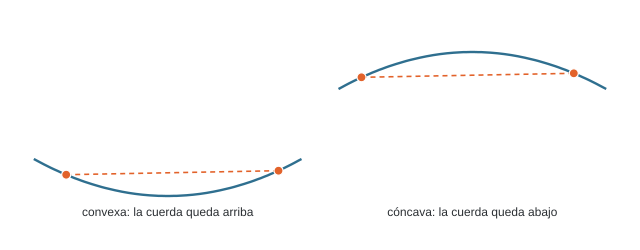
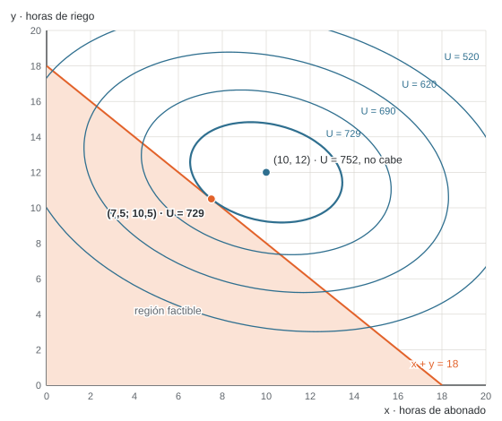
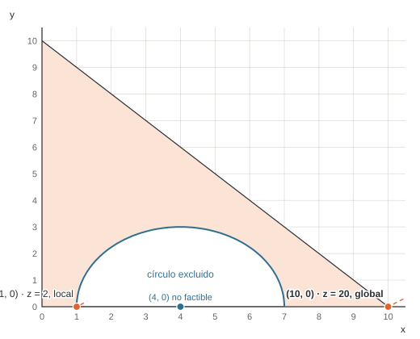
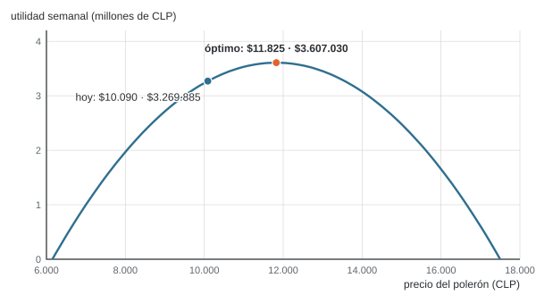

![Camilo Merino]()
Unidad 3 · Optimización no lineal básica
Qué vas a poder hacer. Decidir si una función es convexa o cóncava con su segunda derivada o su hessiano, encontrar sus puntos críticos con las condiciones de primer orden, distinguir un óptimo local de uno global y justificar cuándo el local basta, resolver gráficamente un problema no lineal de dos variables y explicar por qué lo no lineal cuesta más que lo lineal.
Lo que necesitas antes. La geometría de la optimización de la unidad 2: región factible, curvas de nivel y dirección de mejora. Del cálculo, derivar una función de una y de dos variables y resolver un sistema de dos ecuaciones.
Tiempo. Unas 5 horas: 2 de lectura con el ejemplo y 3 de práctica.
1. La idea
En la unidad 2 el objetivo y las restricciones eran rectas: el margen crecía en proporción a lo que se producía. Muchas decisiones no son así:
- Si subes el precio, vendes menos. La venta es precio por cantidad, y la cantidad depende del precio: el ingreso queda con un término \(p^2\).
- El abono y el riego rinden cada vez menos: la décima hora de riego aporta menos que la primera.
- El costo de un horno sube más que proporcional cuando se lo exige cerca de su tope.
Cuando el objetivo o alguna restricción tiene productos, potencias o raíces de las variables, el problema es de programación no lineal (PNL). La diferencia con lo lineal (PL) cambia dónde se busca el óptimo:
| Lineal (PL) | No lineal (PNL) | |
|---|---|---|
| Dónde está el óptimo | en un vértice de la región (o en un borde entero) | en un vértice, en medio de un borde o en el interior |
| Óptimo local y global | todo óptimo local es global | un óptimo local puede no ser global |
| Cómo se resuelve | se recorren vértices (simplex, unidad 8) | se sigue la pendiente desde un punto de partida |
Esta unidad da las herramientas para saber cuándo lo no lineal se porta bien (es convexo) y qué hacer cuando no.
2. Funciones convexas y cóncavas
La definición
Una función es convexa si el segmento (la cuerda) entre dos puntos cualesquiera de su gráfico queda por encima del gráfico; es cóncava si queda por debajo. Con \(0 \le t \le 1\):
\[f\big(t x_1 + (1-t) x_2\big) \le t\, f(x_1) + (1-t)\, f(x_2) \quad \text{(convexa; con } \ge \text{, cóncava)}\]

La intuición: una función convexa tiene forma de valle, una cóncava de cerro. En un valle, bajar siempre lleva al fondo; en un cerro, subir siempre lleva a la cumbre. Esa es la propiedad que importa.
Una función lineal es convexa y cóncava a la vez (la cuerda coincide con el gráfico). Por eso la PL nunca tiene trampas.
Una variable · la segunda derivada
\[f''(x) \ge 0 \text{ en todo el intervalo} \iff f \text{ convexa} \qquad f''(x) \le 0 \text{ en todo el intervalo} \iff f \text{ cóncava}\]
La segunda derivada mide cómo cambia la pendiente. Si la pendiente siempre crece (\(f'' \ge 0\)), la curva se dobla hacia arriba: valle. Ojo con dos detalles:
- La condición es en todo el intervalo, no en un punto. \(h(x) = x^3\) tiene \(h''(x) = 6x\): es cóncava para \(x \le 0\) y convexa para \(x \ge 0\). En \(x = 0\) cambia de forma (punto de inflexión).
- \(f''(x) = 0\) en un punto no rompe la convexidad: \(x^4\) tiene \(f''(0) = 0\) y es convexa.
Dos variables · el hessiano
Con \(f(x, y)\), el papel de la segunda derivada lo cumple la matriz hessiana:
\[H = \begin{pmatrix} f_{xx} & f_{xy} \\ f_{xy} & f_{yy} \end{pmatrix}\]
Sus menores principales son los determinantes de las submatrices que se forman quitando filas y columnas con el mismo índice: los de orden 1 son \(f_{xx}\) y \(f_{yy}\); el de orden 2 es \(\det H = f_{xx} f_{yy} - f_{xy}^2\). La regla para una matriz de \(2 \times 2\):
| Si en toda la región | \(H\) es | \(f\) es |
|---|---|---|
| \(f_{xx} > 0\) y \(\det H > 0\) | definida positiva | estrictamente convexa |
| \(f_{xx} < 0\) y \(\det H > 0\) | definida negativa | estrictamente cóncava |
| \(f_{xx} \ge 0\), \(f_{yy} \ge 0\) y \(\det H \ge 0\) | semidefinida positiva | convexa |
| \(f_{xx} \le 0\), \(f_{yy} \le 0\) y \(\det H \ge 0\) | semidefinida negativa | cóncava |
| \(\det H < 0\) | indefinida | ni convexa ni cóncava (hay punto silla) |
Por qué funciona: \(\det H > 0\) dice que las dos curvaturas principales tienen el mismo signo; el signo de \(f_{xx}\) dice cuál. Si \(\det H < 0\), la superficie sube en una dirección y baja en otra, como una silla de montar.
Para las semidefinidas se miran todos los menores principales (\(f_{xx}\), \(f_{yy}\) y \(\det H\)), no solo los «de la esquina». La matriz con \(f_{xx} = 0\), \(f_{yy} = 2\) y \(f_{xy} = 0\) es semidefinida positiva aunque su primer menor sea 0.
Si la función es cuadrática (como todas las de esta unidad), el hessiano es una matriz de números y basta revisarlo una vez. Si no, depende del punto y hay que revisarlo en toda la región.
Conjuntos convexos
Un conjunto es convexo si el segmento entre dos puntos cualesquiera del conjunto queda dentro. Lo que hay que saber para modelar:
- Toda restricción lineal (\(a_1 x + a_2 y \le b\)) define un semiplano, que es convexo.
- \(g(x, y) \le b\) con \(g\) convexa define un conjunto convexo (el interior de un círculo, por ejemplo).
- \(g(x, y) \ge b\) con \(g\) convexa no suele serlo (el exterior de un círculo).
- Una igualdad no lineal (\(x^2 + y^2 = 4\)) es una curva: no es convexa.
- La intersección de conjuntos convexos es convexa. Por eso la región de una PL siempre lo es.
3. Óptimo local, óptimo global y el teorema fundamental
Un punto factible \(x^*\) es un mínimo local si ningún punto factible cercano es mejor; es un mínimo global si ningún punto factible, cerca o lejos, es mejor. Para un máximo, igual.
Existencia (Weierstrass). Si \(f\) es continua y la región es cerrada (incluye su borde) y acotada, el problema tiene mínimo y máximo global. Si la región no es acotada, puede no haber óptimo; si es abierta, el óptimo puede quedar «en el borde que falta».
Teorema fundamental de la programación convexa. Si se minimiza una función convexa (o se maximiza una cóncava) sobre un conjunto convexo, todo óptimo local es global.
La razón, en una línea: si hubiera un punto mejor lejos de \(x^*\), el segmento entre los dos queda dentro de la región (conjunto convexo) y a lo largo de él la función mejora desde el primer paso (función convexa). Entonces habría puntos mejores tan cerca de \(x^*\) como se quiera, y \(x^*\) no sería óptimo local.
Cuándo NO aplica. Basta que falle una de las dos condiciones. Maximizar algo convexo, o trabajar sobre una región no convexa (el exterior de un círculo, ejercicio 3.7), puede dejar varios óptimos locales y no hay garantía de que el que encontraste sea el mejor.
4. Condiciones de primer orden sin restricciones
Una variable
Un óptimo en el interior de la región tiene pendiente cero:
\[f'(x^*) = 0 \qquad\text{y luego}\qquad f''(x^*) < 0 \Rightarrow \text{máximo local}, \quad f''(x^*) > 0 \Rightarrow \text{mínimo local}\]
Si \(f''(x^*) = 0\), la prueba no decide: se sigue derivando (la primera derivada que no se anula, si es de orden par, decide como la segunda; si es impar, es inflexión).
Dos variables
\[\nabla f(x^*, y^*) = \begin{pmatrix} f_x \\ f_y \end{pmatrix} = \begin{pmatrix} 0 \\ 0 \end{pmatrix}\]
y el hessiano en ese punto decide: definido negativo, máximo local estricto; definido positivo, mínimo local estricto; indefinido, punto silla.
De local a global. Si además \(f\) es cóncava en toda la región (o convexa, para un mínimo), el teorema del punto 3 convierte el máximo local en global. Esa es la gracia de revisar la convexidad: con ella, resolver \(\nabla f = 0\) termina el problema.
Cuándo no basta. \(\nabla f = 0\) solo encuentra óptimos interiores. Si el punto crítico cae fuera de la región, el óptimo está en el borde y hay que buscarlo ahí (punto 5).
5. Solución gráfica de un problema no lineal con dos variables
Se dibuja igual que en la unidad 2 (región factible y curvas de nivel), con dos diferencias:
- Las curvas de nivel ya no son rectas paralelas: son círculos, elipses o curvas.
- El óptimo es el punto de la región que toca la mejor curva de nivel. Puede ser un vértice, un punto en medio de un borde (donde la curva de nivel es tangente al borde) o un punto interior (el centro de las elipses, si cae dentro de la región).
Por eso revisar solo los vértices, que en PL basta, en PNL puede dar una respuesta mala (el ejemplo lo muestra).
Con una restricción activa · la idea de Lagrange
Si el óptimo está sobre un borde \(g(x, y) = b\), en ese punto la curva de nivel y el borde son tangentes: sus gradientes son paralelos.
\[\nabla f(x^*, y^*) = \lambda\, \nabla g(x^*, y^*) \qquad g(x^*, y^*) = b\]
Son tres ecuaciones para tres incógnitas (\(x\), \(y\) y el multiplicador \(\lambda\)). Es lo mismo que buscar los puntos críticos del lagrangiano \(\mathcal{L} = f + \lambda\,(b - g)\). El multiplicador se lee como un precio: cuánto mejora el objetivo por cada unidad más de \(b\). Es la misma idea que el precio sombra de la PL (unidad 10).
Con una restricción de desigualdad hay dos casos, y se revisan los dos (son las condiciones de Karush, Kuhn y Tucker, KKT):
- Inactiva (\(\lambda = 0\)): el óptimo es el punto crítico libre; vale si cumple la restricción.
- Activa (\(g = b\)): se resuelve con Lagrange; en un máximo con \(g \le b\) vale si \(\lambda \ge 0\) (aflojar la restricción no puede empeorar).
La condición «o la restricción está activa o su multiplicador es cero» se llama holgura complementaria y vuelve en la unidad 11. Con \(m\) restricciones hay hasta \(2^m\) combinaciones de casos; por eso KKT a mano sirve para problemas chicos.
6. Ejemplo resuelto · el invernadero
Un invernadero de tomates en la Región de Ñuble decide cuántas horas por semana dedica al abonado (\(x\)) y al riego por goteo (\(y\)). Con lo que midió la temporada pasada ajustó el margen semanal de la cosecha, en miles de pesos:
\[U(x, y) = 52x + 82y - 2x^2 - 3y^2 - xy\]
Los términos al cuadrado son los rendimientos decrecientes; el \(-xy\) dice que abonar y regar a la vez satura la planta. El encargado tiene 18 horas a la semana para las dos tareas.
En palabras. Se decide cuántas horas abonar y cuántas regar; se busca el mayor margen; limita el tiempo del encargado.
\[\max\; U(x, y) \quad \text{s.a.} \quad x + y \le 18, \quad x, y \ge 0\]
Paso 1 · ¿Es cóncava? Derivando dos veces:
\[H = \begin{pmatrix} -4 & -1 \\ -1 & -6 \end{pmatrix} \qquad f_{xx} = -4 < 0, \quad \det H = (-4)(-6) - (-1)^2 = 23 > 0\]
Los menores principales son −4, −6 y 23: el hessiano es definido negativo, \(U\) es estrictamente cóncava y la región (un triángulo de restricciones lineales) es convexa. Por el teorema fundamental, el máximo local que encontremos es global.
Paso 2 · Primer orden sin la restricción.
\[U_x = 52 - 4x - y = 0 \qquad U_y = 82 - x - 6y = 0 \quad\Rightarrow\quad (x, y) = (10, 12), \quad U = 752\]
Pero \(10 + 12 = 22 > 18\): el punto ideal no cabe en las horas del encargado. La restricción va a estar activa.
Paso 3 · Sobre el borde \(x + y = 18\) (Lagrange).
\[52 - 4x - y = \lambda \qquad 82 - x - 6y = \lambda \qquad x + y = 18\]
Igualando las dos primeras: \(-30 - 3x + 5y = 0\); con \(y = 18 - x\) sale \(8x = 60\). Resultado: (7,5; 10,5), con \(\lambda = 52 - 30 - 10{,}5 = 11{,}5\) y \(U = 729\). Como \(\lambda \ge 0\), el caso activo es válido.
Paso 4 · Comparar con los vértices.
| Punto | Qué es | \(U\) (miles de $) |
|---|---|---|
| (0, 0) | vértice | 0 |
| (18, 0) | vértice | 288 |
| (0, 18) | vértice | 504 |
| (7,5; 10,5) | tangencia en medio del borde | 729 |
| (10, 12) | óptimo libre, fuera de la región | 752 |

La elipse de \(U = 729\) toca la recta \(x + y = 18\) en un solo punto, que no es vértice. Quien busque el óptimo solo en los vértices se queda con 504, un 31 % menos.
Cómo se lee.
- Con 18 horas, el encargado abona 7,5 h y riega 10,5 h. El margen es de 729 mil pesos por semana.
- La restricción de horas cuesta 752 − 729 = 23 mil pesos por semana: es lo que se deja de ganar por no tener tiempo para el punto ideal.
- El multiplicador dice que una hora más vale unos 11,5 mil pesos. Si se puede contratar a alguien por menos de eso la hora, conviene. Es una tasa en el margen: con 19 horas el óptimo pasa a (8,125; 10,875) y el margen a 739,06, una ganancia de 10,06 mil, algo menos que 11,5 porque cada hora extra rinde menos que la anterior (concavidad).
7. Por qué lo no lineal es más difícil
- El óptimo no está en una lista finita. En PL basta revisar vértices; en PNL puede estar en cualquier punto de un borde o del interior.
- Puede haber varios óptimos locales. Un método que sube por la pendiente se detiene en la primera cumbre que encuentra. Sin convexidad, no hay cómo saber si era la más alta (ejercicio 3.7).
- Las condiciones de primer orden dan candidatos, no respuestas. Con restricciones, KKT pide revisar combinaciones de restricciones activas, que crecen como \(2^m\).
- Los computadores lo resuelven, con matices. CPLEX (el motor de OPL) resuelve programas
cuadráticos convexos: minimizar una cuadrática convexa, o maximizar una cóncava, con
restricciones lineales. El caso de esta unidad está escrito así en
modelos/u03_precio_polerones.mod. Un modelo no lineal cualquiera necesita otro tipo de solver (en Excel, el método GRG de Solver), que entrega un óptimo local que depende del punto de partida.
Por eso, cuando se puede, se modela de forma lineal (unidad 4) o se comprueba la convexidad antes de confiar en el resultado.
8. Errores típicos
| Error | Cómo evitarlo |
|---|---|
| Revisar solo los vértices en un problema no lineal | El óptimo puede estar en medio de un borde o en el interior; dibuja las curvas de nivel |
| Concluir «máximo global» con solo \(f'' < 0\) en el punto crítico | Eso da máximo local; para global, la función tiene que ser cóncava en toda la región (o compara con los bordes) |
| Declarar convexa una función porque \(f'' > 0\) en un punto | La condición es en todo el intervalo; \(x^3\) cambia de forma en 0 |
| Clasificar el hessiano mirando solo \(f_{xx}\) | Mira también \(\det H\); con \(\det H < 0\) es indefinido aunque \(f_{xx} > 0\) |
| En semidefinidas, revisar solo los menores «de la esquina» | Revisa todos los menores principales: \(f_{xx}\), \(f_{yy}\) y \(\det H\) |
| Dar por bueno el punto crítico sin ver si es factible | Si \(\nabla f = 0\) cae fuera de la región, el óptimo está en el borde |
| Usar el teorema fundamental sobre una región no convexa | El exterior de un círculo o una igualdad no lineal rompen la garantía |
| Dejar de lado un caso de KKT o aceptar un \(\lambda\) con el signo equivocado | Revisa los dos casos de cada restricción; en un máximo con \(g \le b\), \(\lambda \ge 0\) |
9. Práctica
Diez ejercicios: 3.1 a 3.4 básicos, 3.5 a 3.8 intermedios, 3.9 y 3.10 de desafío. Las pautas están en la sección 10. Intenta cada uno antes de mirarla.
3.1 · Convexa, cóncava o ninguna (básico). Clasifica cada función en todo \(\mathbb{R}\), encuentra su punto crítico y di si es mínimo o máximo global. (a) \(f(x) = 3x^2 - 12x + 7\). (b) \(g(x) = 40 + 6x - 0{,}5x^2\). (c) \(k(x) = x^4\): ¿qué dice la prueba de la segunda derivada en su punto crítico y qué dice la convexidad?
3.2 · Local no es global (básico). Para \(h(x) = 2x^3 - 15x^2 + 24x + 10\) en el intervalo \([0, 6]\): encuentra los puntos críticos, clasifícalos, ubica el punto de inflexión y di en qué parte del intervalo es convexa y en cuál cóncava. ¿Dónde están el máximo y el mínimo global del intervalo?
3.3 · Cuatro hessianos (básico). Calcula el hessiano y clasifica cada función. (a) \(f = x^2 + 2y^2 - 2xy + 4x\). (b) \(g = -3x^2 - y^2 + 4xy\). (c) \(h = -x^2 - 4y^2 + 2xy + 6y\). (d) \(k = x^2 + 4xy + 4y^2\).
3.4 · Un mínimo en dos variables (básico). Encuentra el punto crítico de \(f(x, y) = x^2 + 3y^2 - 2xy - 4x + 8y + 5\) y demuestra que es un mínimo global.
3.5 · El precio de un queque (intermedio). Una pastelería de barrio vende queques de zanahoria. Con los registros de ventas estimó la demanda semanal \(q = 960 - 0{,}32\,p\) (unidades, con \(p\) en pesos), y cada queque le cuesta $1.150. (a) Plantea la utilidad semanal en función del precio y demuestra que es cóncava. (b) Encuentra el precio óptimo, las unidades y la utilidad. (c) Si el costo sube a $1.390, ¿cuánto conviene subir el precio? ¿Qué parte del alza de costo se traspasa al cliente?
3.6 · Lo más cerca posible (intermedio). Resuelve gráficamente \(\min\, (x - 6)^2 + (y - 5)^2\) s.a. \(x + 2y \le 10\), \(x, y \ge 0\). (a) Dibuja la región y tres curvas de nivel; encuentra el óptimo y su valor. (b) Evalúa la función en los tres vértices: ¿qué habría respondido alguien que solo revisa vértices? (c) ¿Qué pasa si el objetivo cambia a \((x - 2)^2 + (y - 1)^2\)?
3.7 · Una región con un hueco (intermedio). Resuelve gráficamente \(\max\, z = 2x - 3y\) s.a. \((x - 4)^2 + y^2 \ge 9\), \(x + y \le 10\), \(x, y \ge 0\). (a) Dibuja la región. ¿Es convexa? Muéstralo con dos puntos. (b) Encuentra todos los máximos locales y el global. (c) Un método que parte en (0, 0) y avanza por el eje \(x\) mientras \(z\) mejora, ¿dónde se detiene?
3.8 · Dos hornos y 1.200 panes (intermedio). Una panadería debe hornear 1.200 marraquetas al día en dos hornos. El costo diario (en pesos) de hornear \(q_1\) en el horno antiguo es \(C_1 = 0{,}02\,q_1^2 + 35\,q_1\), y de \(q_2\) en el nuevo, \(C_2 = 0{,}05\,q_2^2 + 20\,q_2\). Reparte la producción al menor costo con Lagrange, demuestra que es mínimo global e interpreta \(\lambda\).
3.9 · Café y sándwich (desafío). Una cafetería fija el precio del café (\(p_1\)) y del sándwich (\(p_2\)). Las demandas diarias son complementarias:
\[q_1 = 870 - 0{,}24\,p_1 - 0{,}06\,p_2 \qquad q_2 = 690 - 0{,}15\,p_2 - 0{,}06\,p_1\]
Cada café cuesta $500 y cada sándwich $1.400. (a) Encuentra los precios que maximizan la utilidad conjunta y demuestra que es máximo global. (b) Si cada precio lo fija un encargado distinto que solo mira la utilidad de su producto (tomando el otro precio como dado), ¿qué precios resultan y cuánta utilidad se pierde? Explica por qué.
3.10 · El queque con el horno lleno (desafío). Vuelve a la pastelería del 3.5 (con costo $1.150). El horno solo alcanza para 240 queques a la semana. (a) Escribe el problema con la cantidad \(q\) como variable y la restricción \(q \le 240\), y resuélvelo con los dos casos de KKT. (b) Interpreta el multiplicador. (c) ¿Cuánto vale, en total, ampliar el horno hasta donde ya no sirva ampliarlo más?
10. Pautas
3.1. (a) \(f''(x) = 6 > 0\): convexa. \(f'(x) = 6x - 12 = 0\) da \(x = 2\), con \(f(2) = -5\): mínimo global. (b) \(g''(x) = -1 < 0\): cóncava. \(g'(x) = 6 - x = 0\) da \(x = 6\), con \(g(6) = 58\): máximo global. (c) \(k''(x) = 12x^2 \ge 0\): convexa. El punto crítico es \(x = 0\), pero \(k''(0) = 0\) y la prueba no decide (habría que llegar a la cuarta derivada, 24 > 0). La convexidad lo resuelve de una vez: es un mínimo global. Lectura: cuando la función es convexa, la segunda derivada en el punto sobra.
3.2. \(h'(x) = 6x^2 - 30x + 24 = 6(x - 1)(x - 4)\). Puntos críticos: \(x = 1\) con \(h''(1) = -18\) (máximo local, \(h(1) = 21\)) y \(x = 4\) con \(h''(4) = 18\) (mínimo local, \(h(4) = -6\)). \(h''(x) = 12x - 30\) se anula en 2,5: cóncava en \([0;\ 2{,}5]\) y convexa en \([2{,}5;\ 6]\). En los extremos, \(h(0) = 10\) y \(h(6) = 46\). Máximo global del intervalo: \(x = 6\), con 46 (un extremo, no un punto crítico). Mínimo global: \(x = 4\), con −6. Lectura: el máximo local en \(x = 1\) no es global; sin concavidad hay que comparar candidatos, incluidos los bordes.
3.3.
| Hessiano | \(f_{xx}\) | \(\det H\) | Clasificación | |
|---|---|---|---|---|
| (a) | \(\begin{pmatrix} 2 & -2 \\ -2 & 4 \end{pmatrix}\) | 2 | \(\det H = 4\) | definido positivo: estrictamente convexa |
| (b) | \(\begin{pmatrix} -6 & 4 \\ 4 & -2 \end{pmatrix}\) | −6 | \(\det H = -4\) | indefinido: punto silla, ni convexa ni cóncava |
| (c) | \(\begin{pmatrix} -2 & 2 \\ 2 & -8 \end{pmatrix}\) | −2 | \(\det H = 12\) | definido negativo: estrictamente cóncava |
| (d) | \(\begin{pmatrix} 2 & 4 \\ 4 & 8 \end{pmatrix}\) | 2 | \(\det H = 0\) | semidefinido positivo (\(f_{xx}\), \(f_{yy} \ge 0\)): convexa, no estricta |
Lectura: en (b) \(f_{xx} < 0\) haría pensar en cóncava; el determinante negativo lo desmiente. En (d), \(k = (x + 2y)^2\): es plana a lo largo de la recta \(x + 2y = 0\).
3.4. \(f_x = 2x - 2y - 4 = 0\) y \(f_y = 6y - 2x + 8 = 0\) dan \((x^*, y^*) = (1, -1)\), con \(f(1, -1) = -1\). \(H = \begin{pmatrix} 2 & -2 \\ -2 & 6 \end{pmatrix}\), con \(f_{xx} = 2 > 0\) y \(\det H = 8 > 0\): definido positivo en todo el plano, \(f\) convexa y el mínimo local es global. Lectura: no hace falta comparar con nada más; la convexidad cierra el problema.
3.5. (a) \(U(p) = (p - 1150)(960 - 0{,}32\,p)\), con \(U''(p) = -0{,}64 < 0\): cóncava. (b) \(U'(p) = 960 - 0{,}64\,p + 0{,}32 \cdot 1150 = 0\) da $p = $2.075, con 296 unidades y una utilidad de $273.800 por semana. (c) Con costo $1.390, el precio óptimo es $2.195: sube $120, la mitad del alza de $240. Se venden 257,6 queques y la utilidad baja a $207.368. Lectura: con demanda lineal, el precio óptimo es \(p^* = (a + b\,c)/(2b)\), y la mitad de cada peso de alza de costo se traspasa al cliente.
3.6. (a) Las curvas de nivel son círculos con centro en (6, 5), que no es factible (\(6 + 10 > 10\)). El óptimo es el punto de la recta \(x + 2y = 10\) más cercano al centro: la proyección (4,8; 2,6), con valor 7,2. Lagrange lo confirma: \(2(x - 6) = -\lambda\) y \(2(y - 5) = -2\lambda\) dan \(\lambda = 2{,}4\). (b) En los vértices: (0, 0) vale 61, (10, 0) vale 41 y (0, 5) vale 36. Quien revisa solo vértices responde 36, cinco veces el óptimo. (c) El centro (2, 1) es factible (\(2 + 2 \le 10\)): el óptimo es interior, con valor 0, y ninguna restricción está activa. Lectura: el mismo problema puede tener el óptimo en un borde o adentro según dónde caiga el centro.
3.7.

(a) No es convexa: (1, 0) y (7, 0) son factibles, pero su punto medio (4, 0) es el centro del círculo excluido. (b) Hay dos máximos locales sobre el eje \(x\). En (1, 0), con \(z = 2\): hacia la derecha se entra al círculo; hacia la izquierda o subiendo por el arco, \(z\) baja (la penalización de \(-3y\) pesa más). En (10, 0), con \(z = 20\): el vértice del triángulo, máximo global. (c) Se detiene en (1, 0) con \(z = 2\): no puede cruzar el círculo y no ve que al otro lado hay un valor diez veces mayor. Lectura: en una región no convexa, un óptimo local puede estar muy lejos del global, y un método local no lo sabe.
3.8. Lagrange: \(0{,}04\,q_1 + 35 = \lambda = 0{,}10\,q_2 + 20\) con \(q_1 + q_2 = 1.200\). Da \(q_1 = 750\) y \(q_2 = 450\), con $\lambda = $ $65. Costos: horno antiguo $37.500, nuevo $19.125, total $56.625 al día. El hessiano del costo es diagonal con 0,04 y 0,10 (definido positivo) y la restricción es lineal: es un problema convexo y el mínimo es global. Lectura: en el óptimo los dos hornos tienen el mismo costo marginal, $65; si un horno costara menos en el margen, convendría pasarle pan. La marraqueta número 1.201 costaría unos $65.
3.9. (a) Las condiciones de primer orden de la utilidad conjunta son \(870 - 0{,}48\,p_1 - 0{,}12\,p_2 + 0{,}24 \cdot 500 + 0{,}06 \cdot 1400 = 0\) y \(690 - 0{,}30\,p_2 - 0{,}12\,p_1 + 0{,}15 \cdot 1400 + 0{,}06 \cdot 500 = 0\). Resultado: café a $1.625 y sándwich a $2.450, con 333 cafés y 225 sándwiches al día y una utilidad de $610.875. El hessiano tiene \(-0{,}48\) y \(-0{,}30\) en la diagonal y \(-0{,}12\) fuera, con \(\det H = 0{,}1296 > 0\): definido negativo, cóncava, máximo global. (b) Cada encargado resuelve solo su derivada: \(0{,}48\,p_1 + 0{,}06\,p_2 = 990\) y \(0{,}06\,p_1 + 0{,}30\,p_2 = 900\). Resultan $1.731 y $2.654, con 295,4 cafés, 188,1 sándwiches y una utilidad de $599.370: se pierden $11.505 al día. Los precios separados son más altos porque cada encargado no ve que su alza le quita clientes al otro producto (son complementarios). Lectura: con productos que se venden juntos, el precio se decide en conjunto.
3.10. (a) Con \(p = (960 - q)/0{,}32 = 3000 - 3{,}125\,q\), la utilidad es \(\pi(q) = (1850 - 3{,}125\,q)\,q\), cóncava. Caso inactivo (\(\mu = 0\)): \(\pi'(q) = 1850 - 6{,}25\,q = 0\) da \(q = 296\), que no cumple \(q \le 240\). Se descarta. Caso activo: \(q = 240\), precio $2.250, utilidad $264.000, y \(\mu = \pi'(240) = $ $350 $\ge 0\): válido. Como el objetivo es cóncavo y la restricción lineal, es el máximo global. (b) Cada queque más de capacidad vale unos $350 de utilidad por semana: es el precio sombra del horno. (c) Ampliar sirve hasta 296 queques (el óptimo libre); de ahí en adelante el multiplicador vale cero. La utilidad sube de $264.000 a $273.800: la ampliación vale $9.800 por semana en total. Lectura: el multiplicador es el valor de la primera unidad extra; el valor total es menor que \(56 \times 350\) porque cada unidad rinde menos que la anterior.
11. Caso integrador · Estampa Sur pone precio a sus polerones
Este caso sigue a Estampa Sur, un taller de serigrafía ficticio, por todo el ramo. Las cifras salen de
verificacion/caso_estampa_sur_lp.py. En la unidad 2 el polerón dejaba un margen de $3.940 y la semana tenía un tope de 830 polerones.
Lo que recibe. El margen de $3.940 de la unidad 2 corresponde al precio de lista actual: $6.150 de costo más $3.940 de margen, $10.090. Con los registros de la tienda, el dueño estimó la demanda semanal de polerones: q = 1.960 − 0,112·p (unidades por semana, con el precio p en pesos). A $10.090 se venden 829,92 polerones por semana: los «unos 830» que usó la unidad 2 como tope.
Pregunta. ¿Está bien puesto el precio? ¿Cuál maximiza la utilidad de los polerones?
Desarrollo.
\[U(p) = (p - 6150)(1960 - 0{,}112\,p) \qquad U'(p) = 1960 + 0{,}112 \cdot 6150 - 0{,}224\,p = 0 \qquad U''(p) = -0{,}224\]
| Precio | Polerones por semana | Utilidad semanal | |
|---|---|---|---|
| Hoy | $10.090 | 829,92 | $3.269.885 |
| Óptimo | $11.825 | 635,6 | $3.607.030 |
- \(U''(p) = -0{,}224 < 0\) en todo el rango: la utilidad es cóncava y el precio óptimo es global. El rango posible va de $6.150 (el costo) a $17.500 (el precio que deja la demanda en cero).
- El margen por polerón pasa a $5.675. Se venden 635,6 polerones, justo la mitad de los 1.271,2 que se venderían a precio de costo: es una propiedad de la demanda lineal.
- La utilidad sube $337.145 por semana.

El modelo está en OPL en modelos/u03_precio_polerones.mod: como la utilidad es una cuadrática
cóncava, CPLEX la maximiza directo y da el mismo precio.
Lectura. El taller vende barato: subir el polerón a $11.825 deja de vender unos 194 polerones por semana, pero gana más en cada uno. Hay dos cosas que este cálculo no mira: que los polerones compiten con las otras cuatro prendas por las horas de planchado y la tinta, y que la cantidad no es entera. Las dos se resuelven con un modelo lineal de toda la mezcla.
Lo que pasa a la unidad 4. La unidad 4 arma el modelo de las cinco prendas compitiendo por los recursos. Ese modelo trabaja con margen fijo por prenda, que es lo que lo hace lineal: toma el margen de lista de $3.940 y un tope semanal de 520 polerones. La pregunta de precio de esta unidad queda como una decisión del dueño que el modelo lineal no toma solo.
12. Para seguir
En los libros del ramo.
- Winston, Investigación de operaciones: aplicaciones y algoritmos (4.ª ed., 2005), el capítulo de programación no lineal: convexidad, condiciones de optimalidad, Lagrange y KKT.
- Hillier y Lieberman, Introducción a la investigación de operaciones (7.ª ed., 2001), el capítulo de programación no lineal y los apéndices de convexidad y optimización clásica.
Abiertos y gratis.
- Bradley, Hax y Magnanti, Applied Mathematical Programming (Addison-Wesley, 1977), en inglés, que el MIT deja descargar completo. El capítulo 13, «Nonlinear Programming», cubre convexidad, óptimos locales y globales y KKT con ejemplos de precios: https://web.mit.edu/15.053/www/AMP.htm
- Boyd y Vandenberghe, Convex Optimization (Cambridge University Press, 2004), en inglés, con el PDF completo autorizado por la editorial, para quien quiera ir más hondo en conjuntos y funciones convexas: https://web.stanford.edu/~boyd/cvxbook/
Con el tutor. La carpeta tutor/ trae el contexto de este ramo. Pégalo al inicio de la
conversación con cualquier IA y pídele, por ejemplo: «Dame una función de dos variables, déjame
clasificar su hessiano y después corrígeme el punto crítico paso a paso».